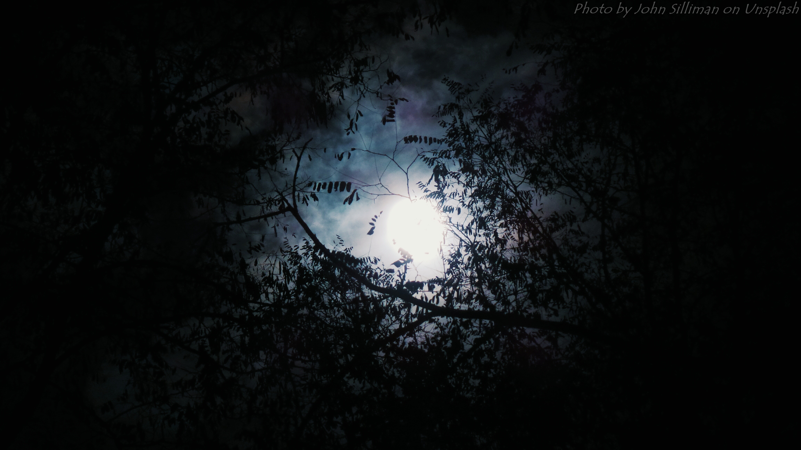

시계

그가 몸을 일으킨 건, 황혼이 지나가 어두운 밤이 하늘을 덮었을 시기였다. 김독자는 깊게 숨을 내쉬었다. 마치 망자가 마지막 숨을 토해내는 것처럼. 거듭된 호흡이 쌓이고 쌓이자, 그는 팔꿈치로 상체를 지탱하며 몸을 일으킨다. 창문에 비치는 몰골은 제법 시체처럼 보였고, 창문 너머로 보이는 풍경은 수많은 별에 먹히는 것마냥 비쳐졌다.
['제4의벽'이 재활성화됩니다.]
무수한 별 아래서 수복 중인 서울의 풍경을 바라보다가 이윽고 앞으로 자신이 해야할 일이 밀물처럼 밀려들어왔다. 제4의벽을 향한 원망을 토해내는 일은 물론이요, 텍본을 읽어야한다는 데까지 생각이 미치자 손끝으로 뿌연 어둠을 더듬는다.
다만 침대 옆 테이블 위에 낯익은 물건이 눈에 들어오자 독자는 더이상 움직이지 못했다. 발바닥은 바닥에 댄 채로, 미동도 않은 제 몸이 조금은 낯설게 느껴질 정도여서 그는 잠시 망설이다가 물건을 향해 손을 뻗었다.
회중시계 뚜껑을 연다. 끽, 짹, 끼익, 끽, 짹. 무의미한 소음을 반복하던 시침이 이윽고, -째깍, 소리를 내는 동시에 멈춰버린다.
-김독자는 웃었다.